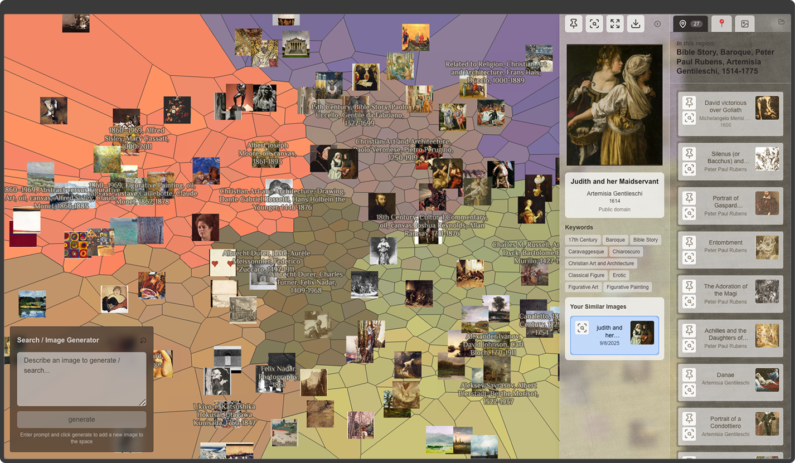
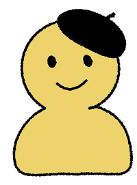
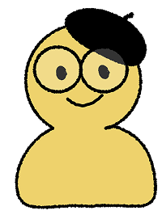
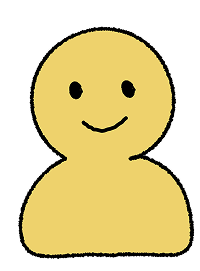
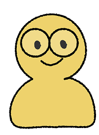

Relating new art & media to previously established works is crucial in creating and engaging with art & culture... but mainstream AI interfaces & media platforms tend to obscure and extract from culture, instead of supporting meaningful engagement with it.
Can we imagine new ways of designing with data to support media ecosystems where history & culture can thrive?

Artographer is an interface for exploring a curated dataset of around 16,000 historical artworks as a zoomable, similarity- clustered map, constructed from multiple embedding models’ representations of each artwork’s visual and semantic features.



- How can computational curation shape the ways we encounter media?
- How might users explore and engage with an alternative media presentation—in this case, a zoomable, similarity-clustered visual-spatial map?
- How can we apply this understanding to design curatorial media systems—ways of presenting media that facilitate more meaningful engagement?
read our paper or come see the talk at C&C 2026, at the Generative AI as Probe session, on Tuesday, July 14, 4:30–6:00 PM, in the Platform Theatre.